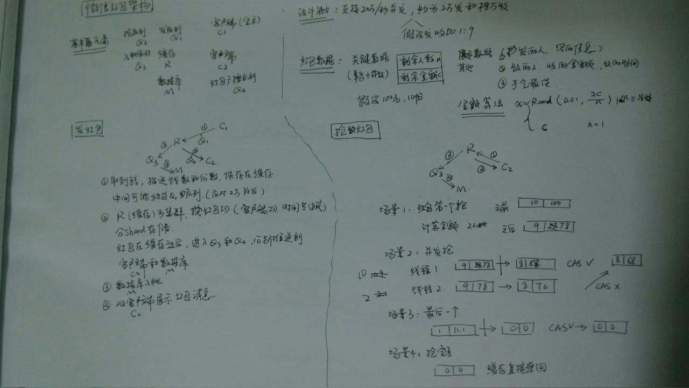

来源于QCon某高可用架构群整理，整理 by 朱玉华。
背景：有某个朋友在朋友圈咨询微信红包的架构，于是乎有了下面的文字（有误请提出，谢谢）
概况：2014年微信红包使用数据库硬抗整个流量，2015年使用cache抗流量。
微信的金额什么时候算？
答：微信金额是拆的时候实时算出来，不是预先分配的，采用的是纯内存计算，不需要预算空间存储。
采取实时计算金额的考虑：预算需要占存储，实时效率很高，预算才效率低。实时性：为什么明明抢到红包，点开后发现没有？
答：2014年的红包一点开就知道金额，分两次操作，先抢到金额，然后再转账。
2015年的红包的拆和抢是分离的，需要点两次，因此会出现抢到红包了，但点开后告知红包已经被领完的状况。进入到第一个页面不代表抢到，只表示当时红包还有。分配：红包里的金额怎么算？为什么出现各个红包金额相差很大？
答：随机，额度在0.01和剩余平均值2之间。例如：发100块钱，总共10个红包，那么平均值是10块钱一个，那么发出来的红包的额度在0.01元～20元之间波动。
当前面3个红包总共被领了40块钱时，剩下60块钱，总共7个红包，那么这7个红包的额度在：0.01～（60/72）=17.14之间。
注意：这里的算法是每被抢一个后，剩下的会再次执行上面的这样的算法（Tim老师也觉得上述算法太复杂，不知基于什么样的考虑）。这样算下去，会超过最开始的全部金额，因此到了最后面如果不够这么算，那么会采取如下算法：保证剩余用户能拿到最低1分钱即可。
如果前面的人手气不好，那么后面的余额越多，红包额度也就越多，因此实际概率一样的。红包的设计
答：微信从财付通拉取金额数据过来，生成个数/红包类型/金额放到redis集群里，app端将红包ID的请求放入请求队列中，如果发现超过红包的个数，直接返回。根据红包的逻辑处理成功得到令牌请求，则由财付通进行一致性调用，通过像比特币一样，两边保存交易记录，交易后交给第三方服务审计，如果交易过程中出现不一致就强制回归。并发性处理：红包如何计算被抢完？
答：cache会抵抗无效请求，将无效的请求过滤掉，实际进入到后台的量不大。cache记录红包个数，原子操作进行个数递减，到0表示被抢光。财付通按照20万笔每秒入账准备，但实际还不到8万每秒。通如何保持8w每秒的写入？
答：多主sharding，水平扩展机器。数据容量多少？
答：一个红包只占一条记录，有效期只有几天，因此不需要太多空间。查询红包分配，压力大不？
答：抢到红包的人数和红包都在一条cache记录上，没有太大的查询压力。一个红包一个队列？
答：没有队列，一个红包一条数据，数据上有一个计数器字段。有没有从数据上证明每个红包的概率是不是均等？
答：不是绝对均等，就是一个简单的拍脑袋算法。拍脑袋算法，会不会出现两个最佳？
答：会出现金额一样的，但是手气最佳只有一个，先抢到的那个最佳。每领一个红包就更新数据么？
答：每抢到一个红包，就cas更新剩余金额和红包个数。红包如何入库入账？
数据库会累加已经领取的个数与金额，插入一条领取记录。入账则是后台异步操作。入帐出错怎么办？比如红包个数没了，但余额还有？
答：最后会有一个take all操作。另外还有一个对账来保障。
下面这张图是@周帆 同学的杰作！
